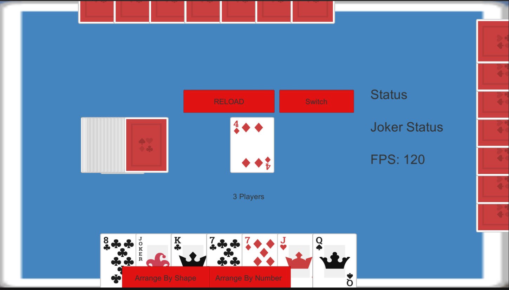
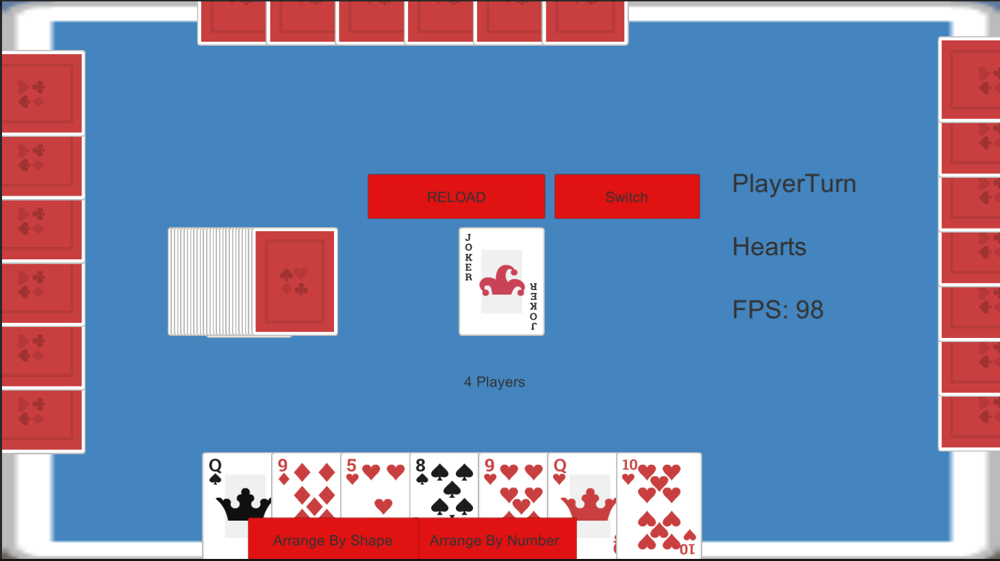
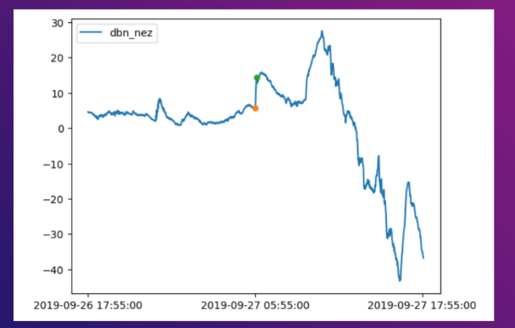
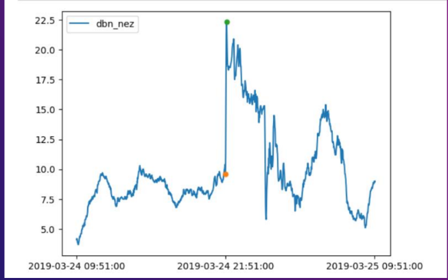

School Card Game
This is a mobile game I started developing in 2021. School is a popular card game in my high school that can be played with 3 or 4 players. I am trying to bring that experience into the mobile game space.
Screenshot of app in Unity Game Engine:
 Languages and Tools Used:
Available On:
Space Weather Prediction
I am currently work in an undergraduate reasearch team trying to predict space weather occurences called Sudden Commencements.
A SC (Sudden Commencement), is an unexpected sharp increase in the Northern (X) magnetic component of a considered observatory. Usually, but not always an SC is the precursor to a geomagnetic storm.
There are two types of Sudden Commencements. Sudden Commencement followed by a magnetic storm/an increase in activity is called a Storm Sudden Commencement (SSC) or by no further disturbance is called a Sudden Impulse (SI)
Screenshot of sample SI and SSC measurements:
 Languages and Tools Used: